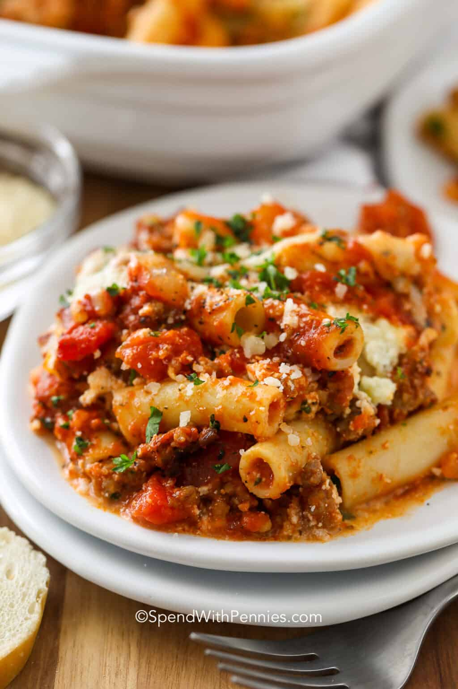

Baked Ziti

Description
Baked Ziti has layers of zesty meat sauce,
ricotta cheese and tender ziti noodles baked until golden.
Ingredients
- 1 pound Italian sausage
- 1 small onion diced
- 28 ounces past sauce or marinara
- 14 ounces dived tomatoes undrained
- 2 teaspoons Italian seasoning
- 1/2 cup water
- 16 ounces ziti
- 15 ounces ricotta cheese
- 2 tablespoons fresh parsley
- 1 egg
- 2 cups mozzarella cheese shredded
- 1/4 parmesan cheese shredded
Instructions
- Preheat oven to 375°F
- Brown ground sausage and onion breaking up until the sausage is fairly fine. Drain any fat.
- Add in Italian seasoning, water, tomatoes and pasta sauce. Simmer 10-15 minutes or until thickened.
- Meanwhile, boil ziti in salted water until al dente. Drain and rinse.
- In a small bowl, mix ricotta, egg, parsley, 1 cup mozzarella cheese, and parmesan cheese.
- Add a thin layer (about 1 cup) of sauce to the bottom of a greased 9x13 pan. Layer half of the ziti, top with all of the ricotta mixture, and half of the sauce.
- Add remaining ziti, remaining sauce, and top with remaining mozzarella cheese.
- Bake 25-30 minutes or until golden and bubbly.